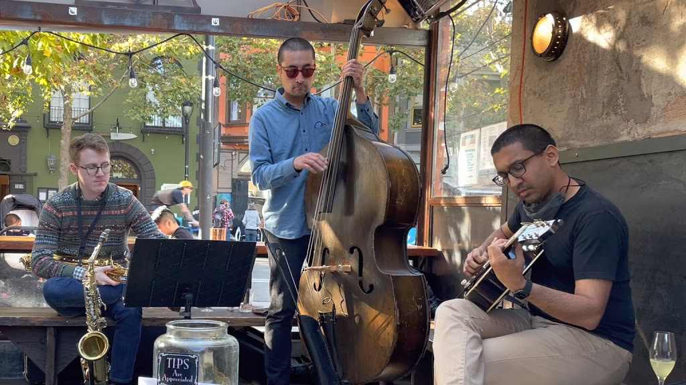
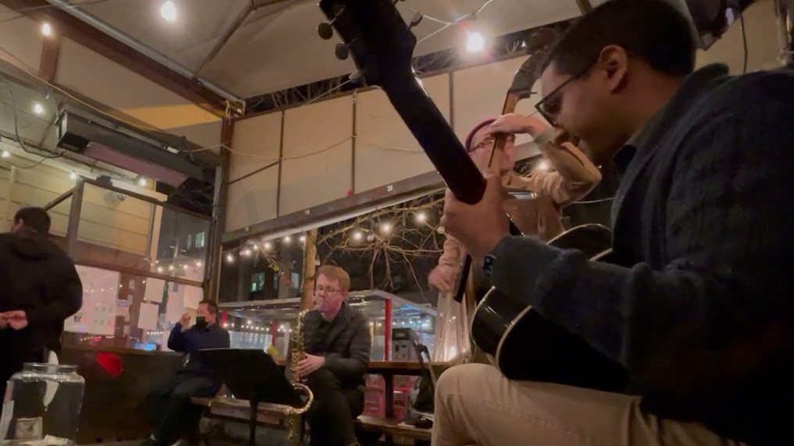
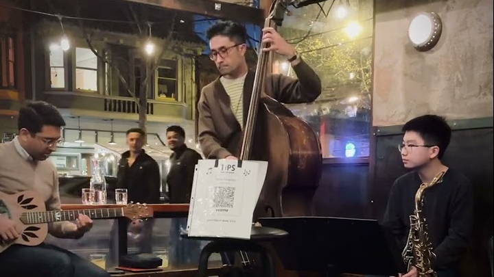

---
---

<main>
  <section class="full-bleed" style="background-image: url('images/background.jpg')">
  </section>
  <section class="narrow">
    <h3>The Curiosities Jazz Band is a tiny ensemble playing the standards of the 1920s, ’30s, and ’40s.</h3>
    <p><a href="about.html">Learn more</a> about the Curiosities, <a href="media.html">watch videos</a> of the band, <a href="albums.html">buy music</a>, or <a href="contact.html">get in touch</a>!</p>
  </section>
  <section>
    <h2>Videos</h2>
    <ul class="gallery">
      <li>
        <a href="https://www.youtube.com/watch?v=wwFzVnB9wbM" target="_blank">
          
          <h2>“Rose Room”</h2>
        </a>
      </li>
      <li>
        <a href="https://www.youtube.com/watch?v=eymEN3XNAi0" target="_blank">
          
          <h2>“Avalon”</h2>
        </a>
      </li>
      <li>
        <a href="https://www.youtube.com/watch?v=1bjHdlWVVZ0" target="_blank">
          
          <h2>“If I Had You”</h2>
        </a>
      </li>
    </ul>
  </section>
</main>